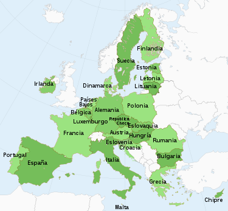
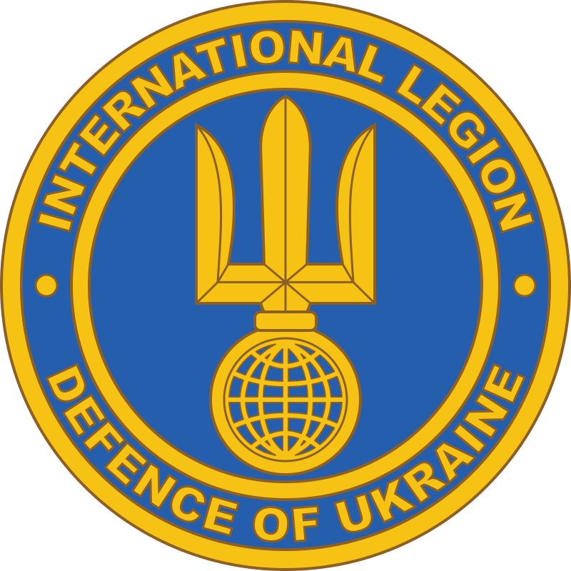

FOREIGN MILITARY SUPPORT TO UKRAINE
The European Union and its Member States

Since the start of the invasion, more than 7 million refugees have fled to the territory of the European Union. Consequently, since March 2022, this flow of people —only Ukrainian nationals— benefits from reception within the EU for a maximum of three years without the need to apply for asylum under the Temporary Protection Directive.
On the other hand, based on the European Peace Support Fund, on February 28, 2022, the European Union ordered the creation of a cell in charge of coordinating the purchase of weapons to support the Ukrainian government against the Russian attack. The European Commission also decided to mobilize the European Union Satellite Center to provide intelligence services to Ukraine. In this way, the Russo-Ukrainian war allowed the EU to reaffirm itself as a geostrategic force and become involved in a military conflict.
United States

In December 2021, the US Department of Defense provided Ukraine with $60 million in immediate military aid. In February 2022, Antony Blinken authorized another $350 million.
In March 2022, President Joe Biden obtained authorization from Congress to deliver $13.6 billion in aid to Ukraine and in April he requested an additional $33 billion, the first installment almost exhausted.
Grand Britain
.svg.png)
In December 2022, Lieutenant General Robert Magowan of the Royal Marines recognized the participation of 350 Marines from the 45th Commando in the war, in early 2022 this unit was sent to Kiev to participate in the evacuation of the British Embassy. The commandos returned to kyiv in April to protect the embassy when the British government decided to re-establish its diplomatic presence in Ukraine after Russia withdrew its forces from around the Ukrainian capital. Although this information had already been revealed by the British Ministry of Defense. According to the aforementioned military officer, "During both phases, the commandos supported other discreet operations in an extremely sensitive environment and with a high level of political and military risk." This is the first time that the British military admits that they have also participated in special operations. in Ukraine.
International Territorial Defense Legion

Under the leadership of President Volodymyr Zelensky, the unit was created for the defense of Ukraine against Russia as part of Russia's 2022 invasion of Ukraine, and its formation was announced in a statement by Ukraine's Foreign Minister Dmytro Kuleba, the February 27, 2022, around 11:00 local time. Those who want to join the unit can do so by contacting the Defense Attaché of the Ukrainian Embassy in their respective country. The effort to raise an International Legion for Ukrainian Territorial Defense parallels kyiv's efforts during and since the 2014 hostilities in Donbas and the Russo-Ukrainian war to recruit battalions of foreign volunteers. By March 6, 20,000 foreign citizens from 52 countries had volunteered to fight on the Ukrainian side, Kuleba said.